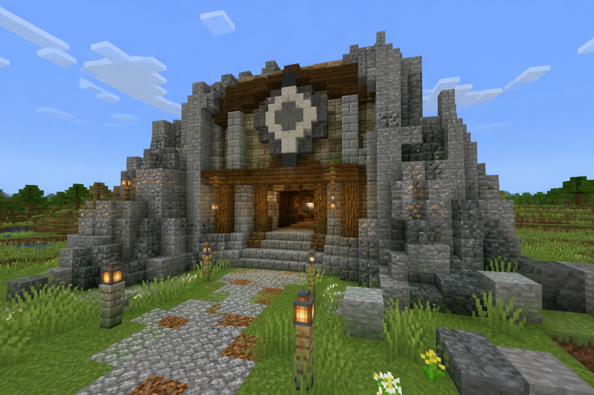

Brock
Brock — Rock-specialist op PokeHaven EU.
Inhoud
Walkthrough — spawn naar Brock
{kind=link}

Voorbereiden
- Team van 4–6 met type-variatie
- Bij voorkeur Gras/Water tegen Rock
- Eten, Oran Berries, spare Poké Balls
- Steen/ijzeren pick voor de trip

Craft Brocks map (coördinaten)
- Je starter kit bevat een Kanto Cartography Table, Brock Map Key en Empty Map.
- Plaats de tafel. Doe Empty Map + Brock Map Key erin.
- Pak de afgewerkte map — díé heeft de marker én de exacte coördinaten.
Belangrijk
Open / right-click de Empty Map niet eerst in de wereld. Dan is hij onbruikbaar voor gym-crafts. Gebruik een verse Empty Map in de Kanto Cartography Table.
Map lijkt leeg?
Loop toch de aangegeven richting. Waystones teleporteren alleen naar stenen die jij activeerde.
In de gym
- Heal vóór de leader.
- Optioneel: versla gym-trainers voor XP + PokéDollars.
- Win → badge → level cap stijgt.
- Craft daarna Misty’s map (Misty · Gym-maps).
Team
| # | Pokémon | Lv | Ability | Nature | Item | Moves |
|---|---|---|---|---|---|---|
| 1 | Geodude | 16 | sturdy | bashful | — | Protect, Rocktomb, Rockthrow, Bulldoze |
| 2 | Bonsly | 16 | rockhead | mild | Focus Sash | Block, Rockthrow, Flail, Copycat |
| 3 | Onix | 20 | sturdy | bashful | Rocky Helmet | Rocktomb, Bulldoze, Sleeptalk, Rockslide |
| 4 | Cranidos | 18 | moldbreaker | impish | — | Takedown, Rocktomb, Rocksmash, Headbutt |
Zie ook: Kanto-gyms · Level cap · Eerste uren